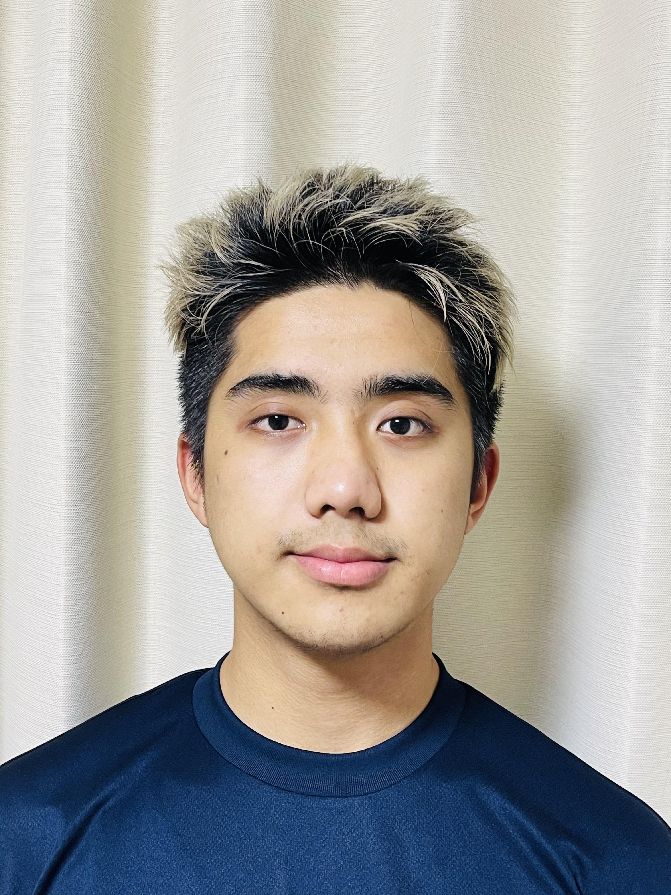

Yash Gurung
Updated Monday, May 29
Gusto Kawagoe Kasumigaseki
Gusto Restaurant in Kasumigaseki stands out for its extensive selection of culinary offerings, spanning both Western and Eastern cuisines. Notably, the restaurant distinguishes itself by offering affordable dining options compared to other family restaurants in the area. Its advantageous proximity to Tokyo International University attracts a diverse clientele, including students seeking respite during their free time or breaks, as well as local residents. The delectable cuisine served at Gusto ensures a gratifying dining experience that is well worth the visit. Moreover, patrons with an affinity for beverages will appreciate the wide range of affordably priced options available, including the option to pay for a drink bar and enjoy unlimited drinks throughout the day.
Recommendation: Scrambled eggs & bacon sausage set and Chikiteki(チキテキ）
Namaste NIPPON
〒350-1103 Saitama, Kawagoe, Kasumigasekihigashi, 1 Chome−３−24
Namaste Nippon, situated in Kasumigaseki near Tokyo International University, exudes a delightful ambiance reminiscent of South Asian cuisine. The restaurant's popularity is further amplified by its close proximity to the university, attracting a substantial number of students hailing from South Asian nations. Namaste Nippon offers a diverse selection of delectable dishes representing Nepal, India, Bangladesh, and other South Asian countries. Notably, the restaurant's remarkable growth can be attributed to its respectful treatment of customers and the continuous enhancement of its culinary offerings. Additionally, patrons who prefer milder flavors can customize the spice level to their preference, ensuring an enjoyable experience without overwhelming heat. The staff members are friendly and proficient in both English and Japanese, providing seamless communication and assistance as needed.
Recommendation: Samosa chat and Butter chicken curry.